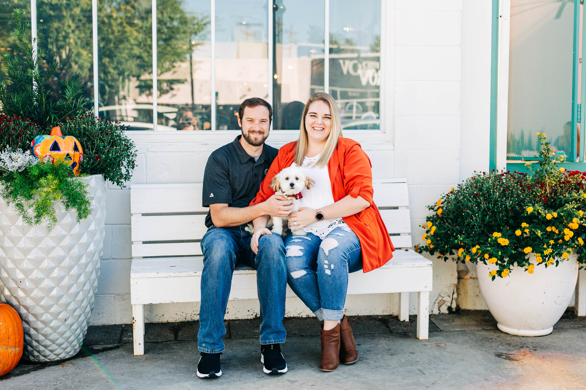
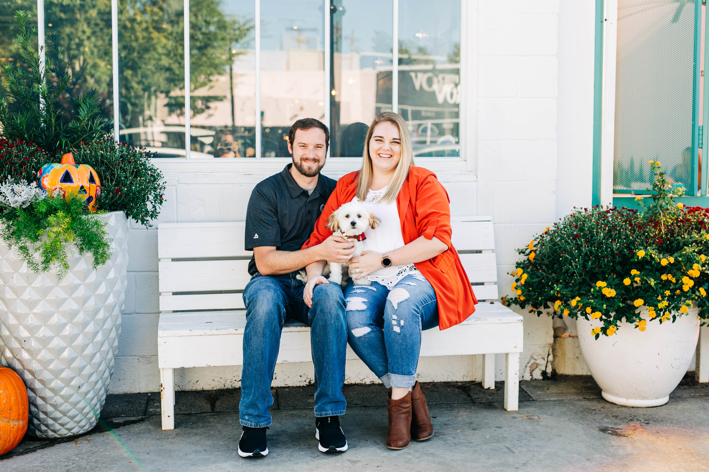
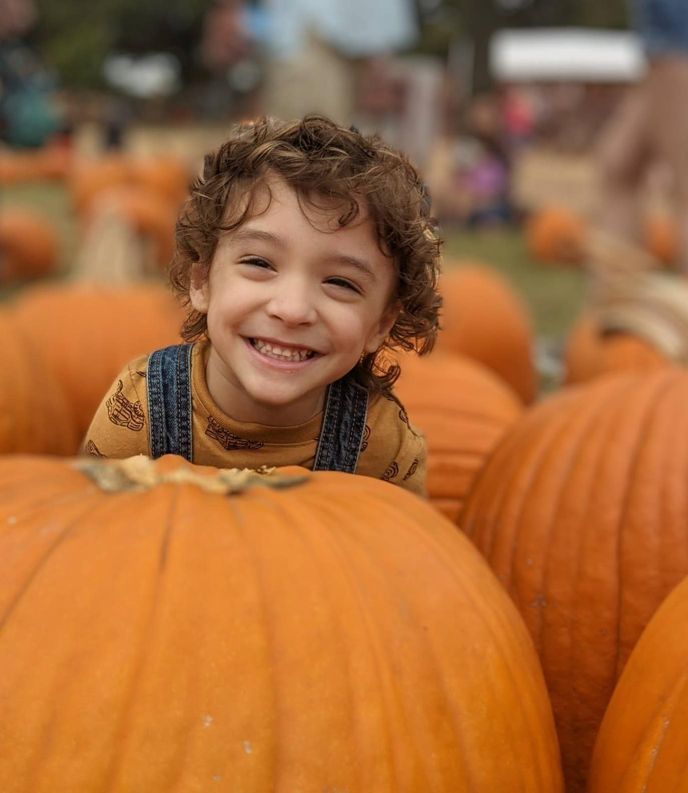
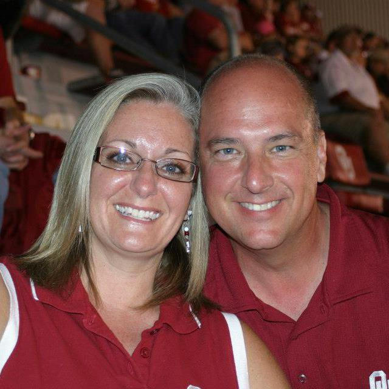
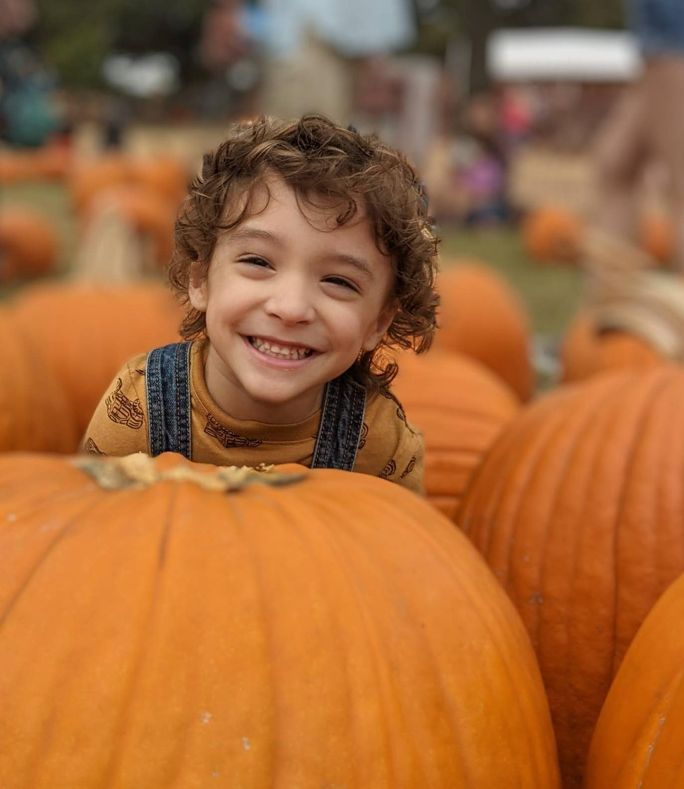
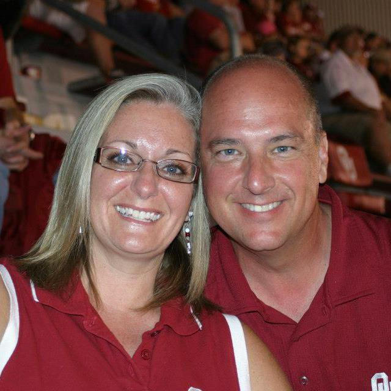

I live in Norman, Oklahoma, I have a husband named Neil and a puppy named Oliver, and I have no idea what I'm doing!
I was born and raised in Fort Worth, Texas but came to Oklahoma in 2014 to attend college at the University of Oklahoma. I thought I wanted to be an engineer... until I realized how much math was involved! I changed my major to architecture and then eventually to Art and Technology. By the time I graduated, I had been in college for 5.5 years, and the number of classes I'd taken gave me a pretty exhaustive degree title: Bachelor of Fine Arts in Art, Technology, and Culture with Emphases in Photography and Architecture and Minors in Art History and Environmental Sustainability. Ridiculous, right?
I met Neil while I was a student in the Pride of Oklahoma Marching Band. We started dating in 2016, married in 2019, and we finally get to go on our honeymoon in three weeks! (Thanks, Covid) We still love supporting the band, and we volunteer throughout the entire season. I recently joined the OU Band Alumni Association after realizing that they had an outdated website and no social media, yet they couldn't figure out why none of the younger alumni wanted to join! I'm slowly whipping everything into shape and bringing the organization into the modern age, but it's a lot of fun being the youngest board member by about 30 years.
I love reading, music, and taking Oliver on walks. Fun fact: I love 5Ks and I plan to do one every month this year! My first one is next weekend on my Dad's birthday!
 

 


